Bedienungsanleitung
Vom Link zur Folie
in einer Minute
Erstellen Sie individuelle QR-Codes und wissenschaftliche Zitate mit QR-Code zum Artikel, fertig für Ihre Folien.

Bedienungsanleitung
Erstellen Sie individuelle QR-Codes und wissenschaftliche Zitate mit QR-Code zum Artikel, fertig für Ihre Folien.
Inhalt
QR Lab macht aus einem Link, einem Kontakt oder einem WLAN einen QR-Code im Stil Ihrer Folien und aus einem Fachartikel ein Zitat mit QR-Code zum Artikel.
Im Browser
niki977.github.io/ultraspeaker-qr-lab, auf Computer und Telefon. QR-Codes werden als PNG oder SVG für PowerPoint, Keynote oder ein Dokument heruntergeladen; Zitate werden kopiert.
In PowerPoint
Registerkarte Start → Gruppe The Ultraspeaker → QR Lab. Der Bereich öffnet sich rechts und fügt QR-Codes und Zitate in die ausgewählte Folie ein.
Demnächst verfügbar
Der PowerPoint-Bereich wird gerade getestet und ist bald verfügbar. Diese Anleitung beschreibt ihn bereits vollständig.
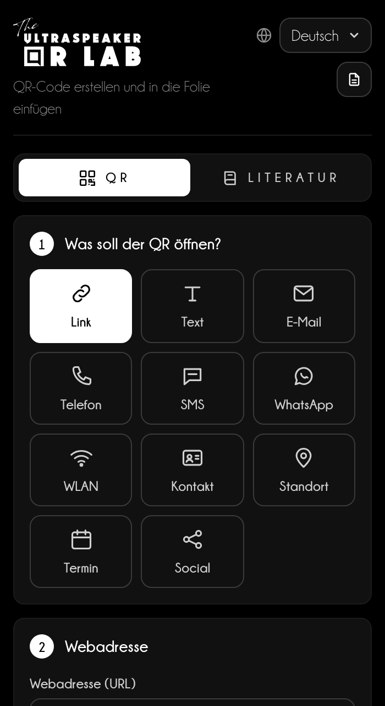
Was auf dem Gerät bleibt
Sprache, Design, letzte QR-Codes, Vorlagen und Quellen bleiben im Browserspeicher; in PowerPoint bleiben die Quellen in der Datei. Das WLAN-Passwort wird nie gespeichert.
Links die Schritte, rechts die Vorschau, immer sichtbar.
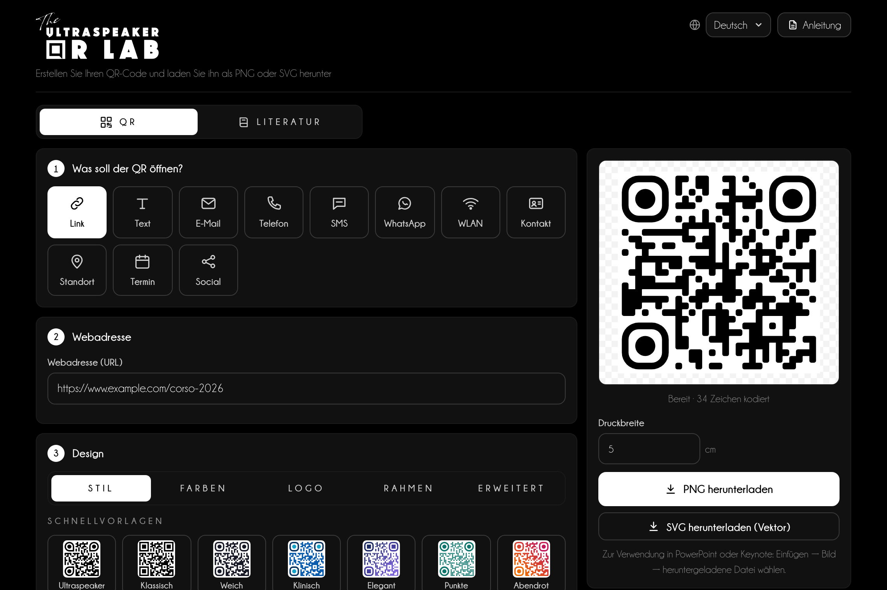
1234567Ein QR-Code zur Seite Ihres Kurses, für die letzte Folie Ihres Vortrags.
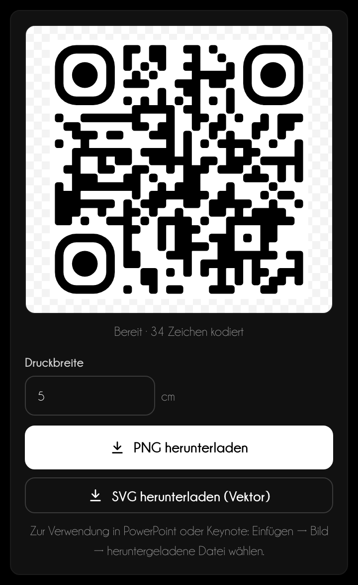
Elf Typen: Jeder baut den Inhalt im Format, das Telefone erkennen.
| Typ | Was beim Scannen passiert |
|---|---|
| Link | Öffnet eine Webseite. |
| Text | Zeigt einen kurzen Text. |
| Bereitet eine Nachricht mit Empfänger, Betreff und Text vor. | |
| Telefon und SMS | Ruft an oder bereitet eine SMS vor. |
| Öffnet einen Chat. | |
| WLAN | Verbindet mit dem Netz mit Name, Sicherheit und Passwort. |
| Kontakt | Speichert eine Visitenkarte im Adressbuch. |
| Ort | Öffnet die Karte aus einer Adresse oder aus Koordinaten. |
| Termin | Fügt einen Termin zum Kalender hinzu. |
| Social Media | Öffnet ein Profil: Der Benutzername genügt. |
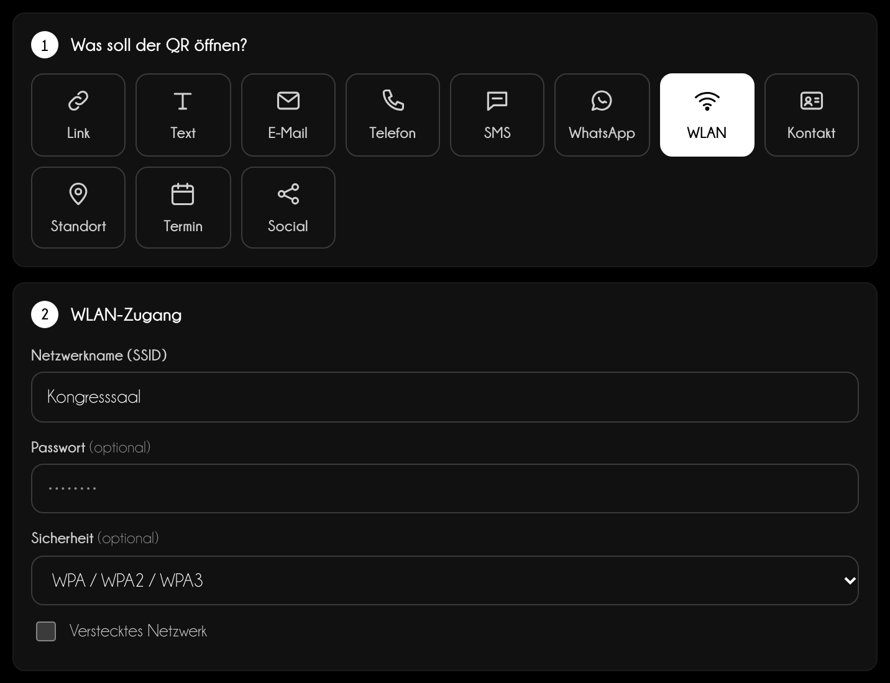
WLAN
Das Passwort dient nur zum Erstellen des Codes: Es wird nie gespeichert, auch nicht bei den letzten QR-Codes.
Das Design ändert das Aussehen, nicht den Inhalt: Testen Sie den Scan immer mit einem Telefon.
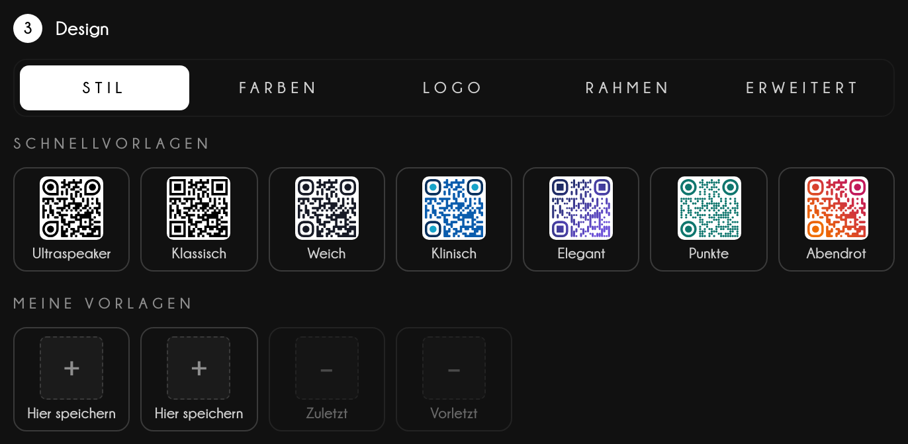
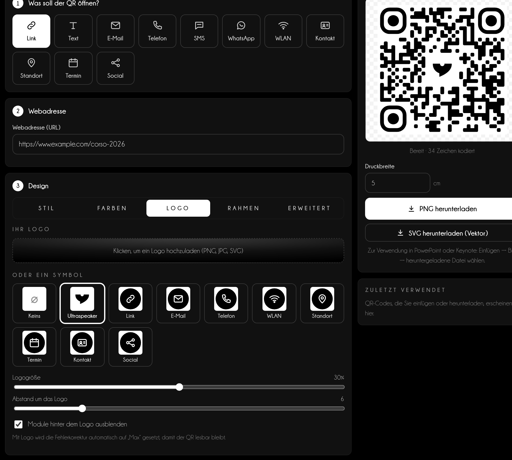
Im Bereich Literatur werden eine DOI, eine PMID oder einige Wörter des Titels zu einem Zitat mit QR-Code, der den Artikel öffnet.
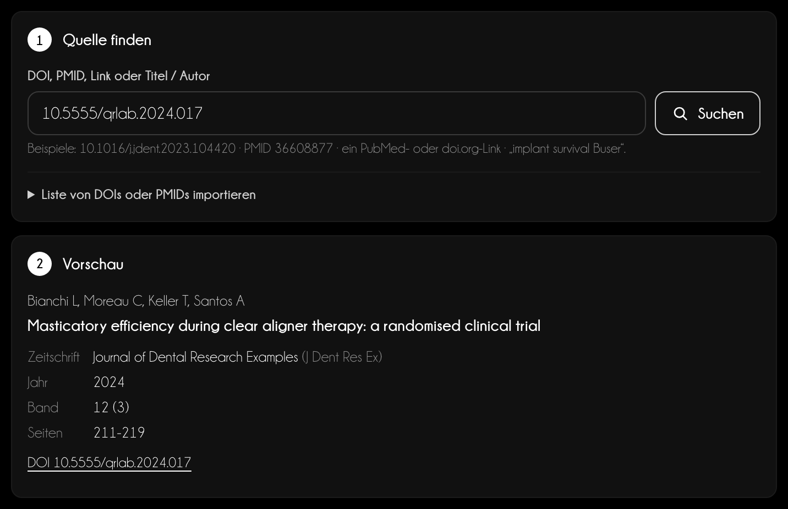
12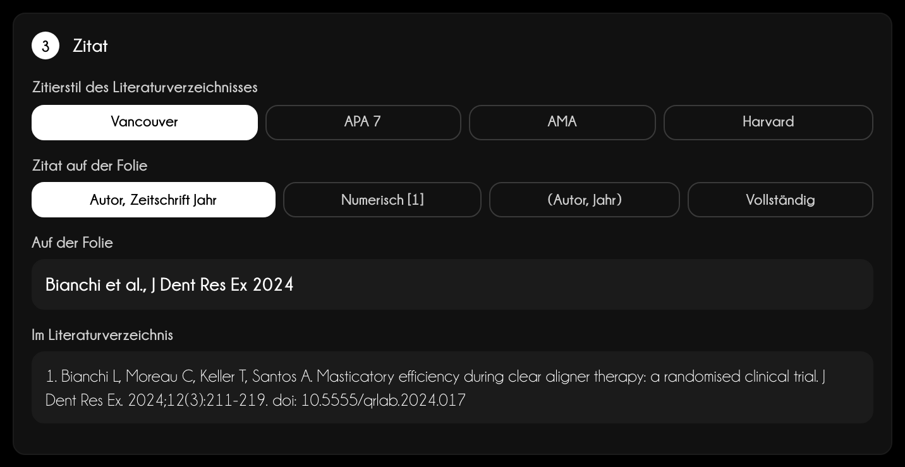
Quellen
Crossref, PubMed (NCBI) und Unpaywall, direkt von Ihrem Gerät abgefragt. Die Hinweise sind eine Hilfe: Prüfen Sie wichtige Zitate immer an der Quelle.
Jeder eingefügte oder hinzugefügte Artikel kommt in Quellen dieser Präsentation: Von dort entstehen Nummerierung, Schlussfolien und das PDF für das Publikum.
Das PDF des Literaturverzeichnisses
PDF herunterladen fragt nach dem Titel des Vortrags (Pflichtfeld), Referent und Datum sowie danach, was in jedem Eintrag stehen soll: Text, Link und QR werden einzeln eingeschaltet, mindestens eines bleibt an. „Literaturverzeichnis leeren“ leert die Liste mit zwei Klicks; die Folien bleiben unverändert. Das PDF hat weiße Seiten, eine Liste ohne Nummern in der gewählten Reihenfolge und „powered by The Ultraspeaker“ am Fuß. Auf dem Telefon wird es geteilt; aus dem PowerPoint-Bereich öffnet es sich im Browser.
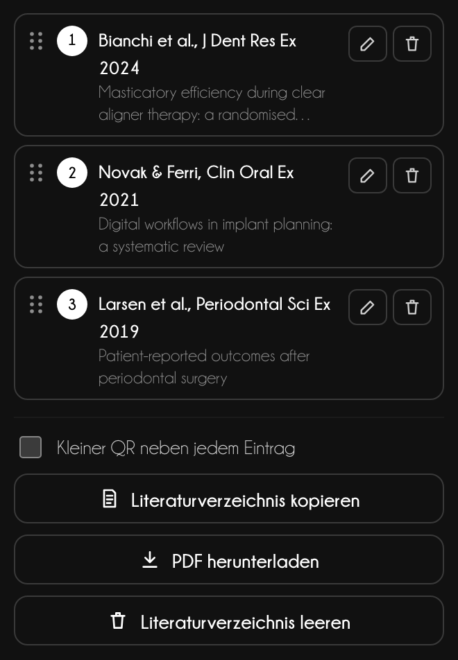
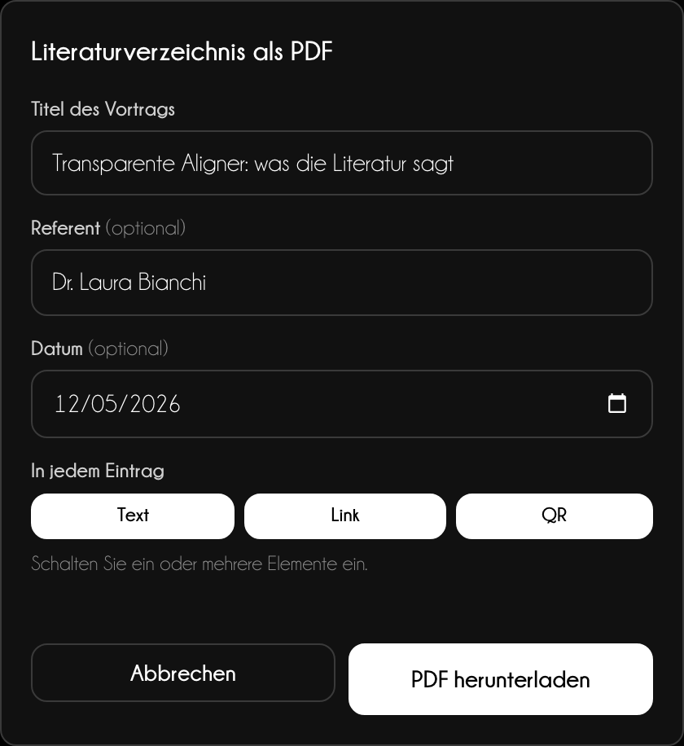
Derselbe QR-Code kommt auf die Folie, in Keynote oder in den Druck: Nur das Format ändert sich.
Webversion
PNG herunterladen erstellt ein Bild mit 300 dpi für die eingestellte Druckbreite; SVG herunterladen (Vektor) bleibt in jeder Größe scharf. Auf dem Telefon öffnet Sichern oder teilen das Teilen-Menü: Fotos, WhatsApp, Mail. Im Literaturbereich kopiert die Hauptschaltfläche das Zitat.
PowerPoint
Wählen Sie PNG oder Vektor und die Breite auf der Folie, dann In Folie einfügen. Für Zitate wählen Sie ein Layout, was eingefügt wird (Zitat + QR, Nur Zitat, Nur QR), Position, Schrift und Farbe: Text und QR-Code werden unten auf der Folie gruppiert.
Demnächst verfügbar
Der PowerPoint-Bereich wird gerade getestet und ist bald verfügbar. Diese Anleitung beschreibt ihn bereits vollständig.
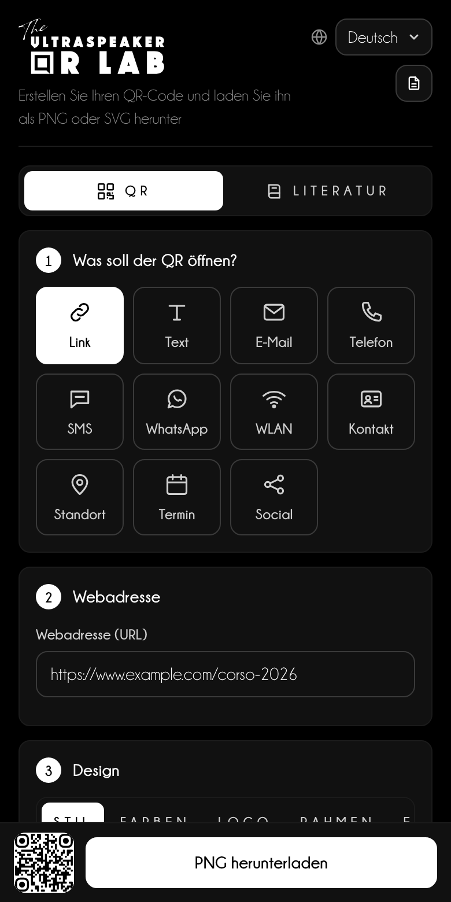
Ein QR-Code funktioniert nur, wenn das Publikum ihn vom Platz aus scannen kann.
Tipp für Referenten
Lassen Sie den QR-Code mindestens 10 Sekunden auf der Leinwand und laden Sie laut ein: „Scannen Sie den Code, um die Folien herunterzuladen.“ Ohne Einladung greift kaum jemand zum Telefon.
| Saal | Abstand zur letzten Reihe | Seitenlänge des QR-Codes |
|---|---|---|
| Kleiner Raum | bis 10 m | mindestens 1/6 der Folienhöhe |
| Kongresssaal | 10–25 m | mindestens 1/4 der Höhe |
| Plenum | über 25 m | mindestens 1/3, allein auf der Folie |
Zitate
Setzen Sie das Zitat unten links, 14–16 pt, in Grau: lesbar, ohne Aufmerksamkeit zu stehlen. Das PDF des Literaturverzeichnisses, nach dem Vortrag verschickt, ist mehr wert als zehn Folien mit Quellen.
Support
Schreiben Sie an info@theultraspeaker.com und nennen Sie Computer und PowerPoint-Version.
Knowledge is not enough.
From expert to Ultraspeaker.
theultraspeaker.com · info@theultraspeaker.com